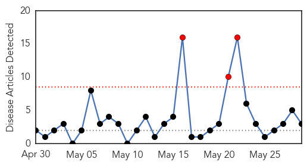
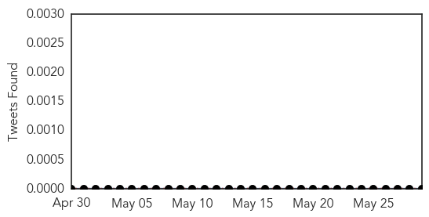
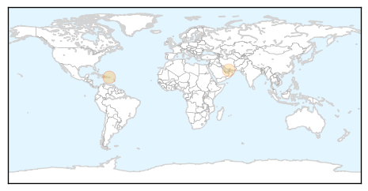
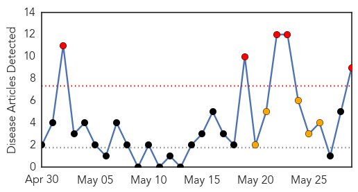
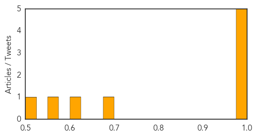

Hepatitis
30-Day Web Trend
3 alerts, 0 warnings

30-Day Twitter Trend
0 alerts, 0 warnings

Article Locations
Article Confidences

Top Articles:
Top Tweets:
-
No tweets found for May 29, 2014
Chikungunya
30-Day Web Trend
5 alerts, 5 warnings

30-Day Twitter Trend
2 alerts, 0 warnings

Article Locations

Article Confidences
Top Articles:
- 0.999
- Mosquito-borne chikungunya virus spreads in the Caribbean
- 0.995
- Mosquito-borne virus could pose a problem in the South
- 0.995
- Chikungunya virus reported in Guyana
- 0.993
- Chikungunya threat spreading to U.S. and South America
- 0.979
- News Scan for May 29, 2014
- 0.695
- Disease-carrying mosquito set to invade east coast
- 0.603
- Vicious mosquito heads to Australia, its bite loaded with dengue fever
- 0.566
- Mosquito invasion for Australia
- 0.514
- New insectary houses Australia's only Asian Tiger mosquitoes
Top Tweets:
-
No tweets found for May 29, 2014